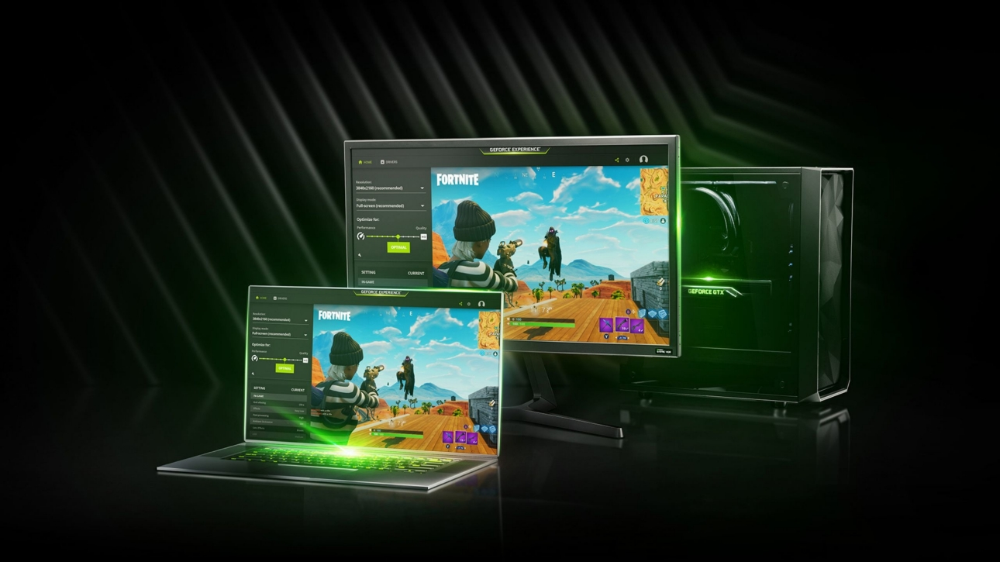
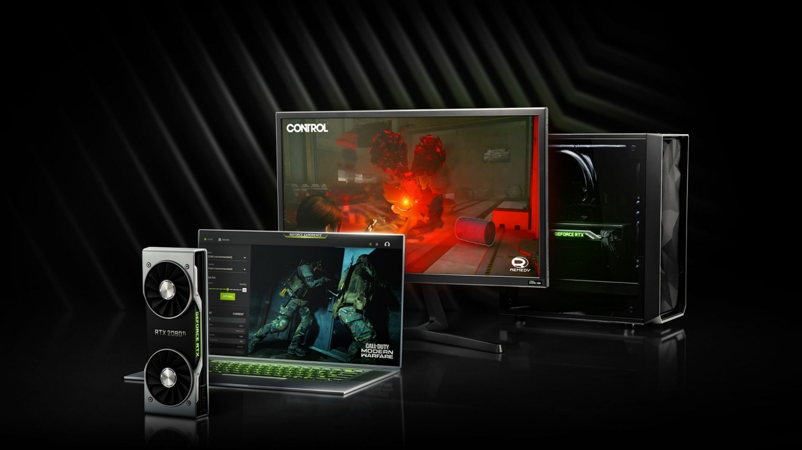
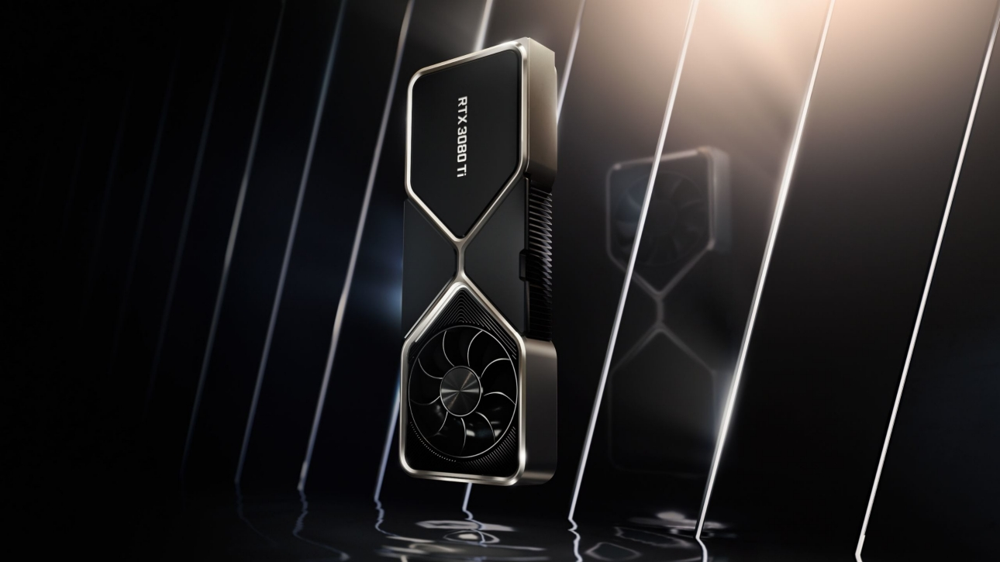
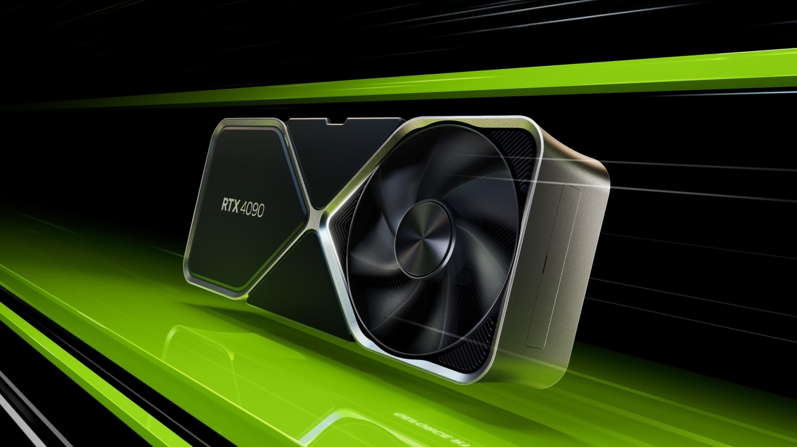

NVIDIA Graphics Cards
GeForce GTX 16 |
GeForce GTX 20 |
GeForce GTX 30 |
GeForce RTX 40 |
|  |  |  |  |
|
Experience the powerful graphics performance of the award-winning NVIDIA Turing architecture with GeForce® GTX 16 Series graphics cards and laptops. |
NVIDIA® GeForce® RTX 20 series graphics cards and laptops feature dedicated ray tracing and AI cores to bring you powerful performance and cutting-edge features. |
GeForce RTX™ 30 Series GPUs deliver high performance for gamers and creators. They’re powered by Ampere—NVIDIA’s 2nd gen RTX architecture—with dedicated 2nd gen RT Cores and 3rd gen Tensor Cores, and streaming multiprocessors for ray-traced graphics and cutting-edge AI features. |
NVIDIA® GeForce RTX™ 40 Series GPUs are beyond fast for gamers and creators. They're powered by the ultra-efficient NVIDIA Ada Lovelace architecture which delivers a quantum leap in both performance and AI-powered graphics. |